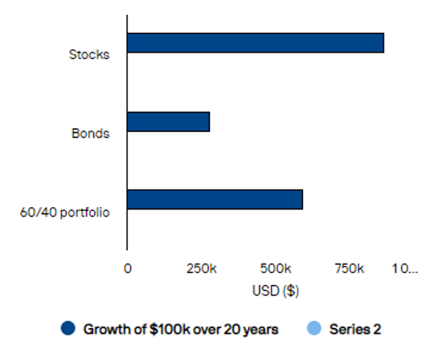

Long Term Investing
Definition
Long-term investments are assets that an individual intends to hold for a long period of time. Keeping your money in one place and not moving it around. Investing for the long term has its benefits including better long-term results, not letting emotion rule your decisions, more cost effective, and receiving dividends.
How to Invest Long Term
- Diversity plays a key role in long term investing. Invest in a wide range of different investments which you could also invest in ETFs or Mutual Funds which are already diversified but it’s also good to have a variety of different ETFs. In addition to investing across asset classes, you can diversify by investing in multiple subcategories within asset classes.
- Don’t try to time the market also commonly known as “trading stocks.” Timing the market is not a good long-term investment strategy, because it has a huge risk. Timing the market investors are trying to buy or sell a stock based on future price predictions.
- Long-term dividend stocks for a long time have been considered a key part of long-term investment portfolio. Dividend stocks are best for investors looking for a combination of income and potential appreciation. When you invest in a divided stock you will receive a regular payout based on the number of shares you own just for investing in their company.

Investing isn’t saving money or “trading” it is a way to increase your money over a long period of time also known as expediential growth. Investments are not always a guaranteed way to increase your money because it comes with risks. Long-term investments are something that will increase your odds of exponential growth with less risk.